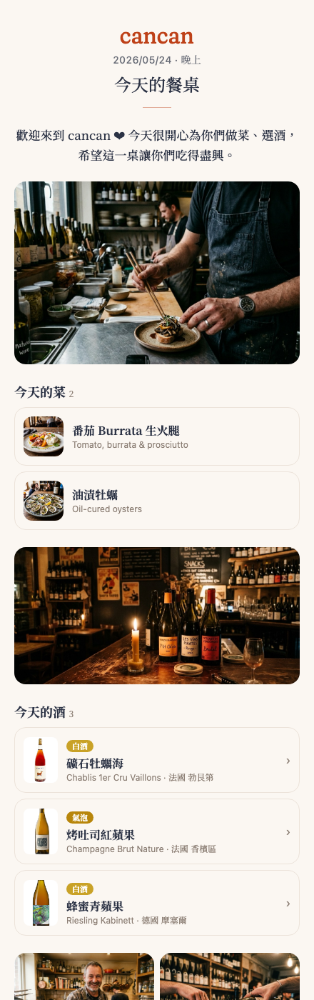
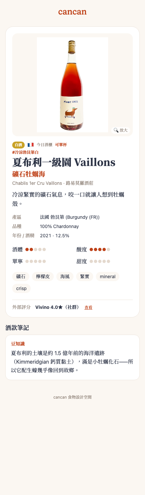

工具開發 · AI 協作 · 餐飲
cancan「今日餐桌」與權限分層
一間台北 natural wine bar 的酒款 App。這一輪用對話長出「送給客人的回憶頁」，順手補上隱私與權限分層——全程我只描述情境與感覺，AI 負責實作、部署、生圖。
我用 AI 做了什麼用一整輪對話，幫店裡的酒款 App 長出「今日餐桌」客人回憶頁、外部評分、兩層登入、店員回饋等功能。
沒有 AI 的話我不會寫程式，只能外包，等報價、等排期，來回改字級改版面會是好幾週的事。
最終成果「值得紀念的一桌，30 秒做一頁送客人」上線，並把客人看不到內部資料的隱私漏洞補起來。
01
為什麼要做這件事
起點是一個很具體的營運情境：遇到很有趣、吃得很開心的一桌，想在結束時送他們一頁「今天的餐桌」當回憶——記錄今天開了哪些酒、吃了哪些菜，配上店裡的側拍照和一段手寫感謝，生成連結 + QR 給客人收藏、分享到 IG。建不建立完全由店長看當天氣氛決定，不是每桌都做。
做著做著，又牽出兩件本來沒想到、但其實更重要的事：
客人收到連結 → 等於知道了工具網址 → 會不會就摸到我們內部用的後台？（隱私）
店員沒有編輯權限，那客人想給回饋時店員怎麼記？
店員沒有編輯權限，那客人想給回饋時店員怎麼記？
所以這一輪其實是「一個許願功能」帶出「一次小型的權限與隱私重整」。
02
最終樣貌

成果截圖客人收到的「今日餐桌」回憶頁：品牌開場、側拍照、今天的菜與酒、手寫感謝、分享 QR。
這一輪做出來的東西：
- 今日餐桌（回憶頁）：挑菜/酒、挑側拍照、寫開場白與手寫感謝、選版型（信箋／卡片／雜誌），生成
?s=專屬連結 + QR。 - 外部評分：酒款頁顯示 Vivino 等第三方評分，18 支在架酒已用 AI 查好填上。
- 兩層登入：店員瀏覽碼只能看、店長編輯碼可改；客人連結免登入。
- 店員回饋：店員不用編輯權限也能記客人回饋。
- 品牌一致：品牌色校正成 #BE4118、標準字改用 Fraunces。

成果截圖酒款詳情頁：外部評分（Vivino）放在第一區最下方、用分隔線隔開，不跟自家資料混在一起。
03
系統架構
維持原本的三層，這次主要是在「App」層長功能、在「Apps Script」層加權限與資料瘦身。
資料庫
Google Sheet
酒 / 菜 / 今日餐桌 / 照片資料夾
API
Apps Script
依權限回三種資料；寫入需編輯碼；公開資料自動瘦身
前端
網頁 App (Preact)
部署 Vercel；客人頁 ?w= / ?d= / ?s=
關鍵概念：同一個 App、三種人看到不同東西——客人（公開、瘦身過的資料）、店員（瀏覽碼，看得到內部小抄但不能改）、店長（編輯碼，全權）。
04
技術選型（這輪新增）
| 選擇 | 為什麼選它 |
|---|---|
| Google Sheet 當側拍相片庫 | 店長把照片丟進 Drive「側拍環境照」資料夾，做回憶頁時清單自動出現，不用每次找工程師 |
| Fraunces（可變字型） | 找標準字時試了幾款圓體都不像，這款「軟襯線」能調粗細/字腳柔軟度，最接近 logo |
| LXGW WenKai TC（手寫字體） | 結尾感謝想要手寫感，但放照片很假——改用手寫字體直接排在頁面上，底色一致、像真的手寫 |
| 外部評分「查一次存起來」 | Vivino / Wine-Searcher 沒有開放 API、不能即時抓；改成進酒時查一次填進 Sheet，自然酒沒評分就留白 |
| 兩層密碼（瀏覽碼 + 編輯碼） | 店員日常用、店長才編輯；客人連結繞過登入 |
05
AI 怎麼幫我做的
AI 負責
- 前端 + 後端（Apps Script）實作
- 部署上線、生示範照片
- 上網查 18 支酒的評分
人負責
- 要做什麼、像不像
- 放哪裡、哪裡怪
- 看截圖給回饋、拍板
提問模式
以「情境描述」開頭（例：遇到有趣的一桌想送他們一頁回憶），AI 先給做法建議＋老實講限制，談好方向才動手；接著是「看截圖 → 微調」的快速來回（字級小 20%、間距收一點、這個拉出來變常駐按鈕…）。
三個關鍵轉折
先討論再動手：今日餐桌一開始只說情境，AI 先把「資料怎麼存、版型、照片怎麼來」攤開列出取捨，這個前置討論讓後面少走很多冤枉路。
「手寫卡看起來很假」：我嫌放手寫照片很假，AI 改用手寫字體渲染文字——原來「溫度」來自字體呈現，不是貼一張圖。
隨口問的隱私疑慮：我問「客人拿到連結會不會摸到後台」，AI 老實說「比你想的更曝露」，把一個許願功能變成一次必要的安全修補。

成果截圖修補後的登入閘門：店員瀏覽碼、店長編輯碼；客人連結則完全繞過。
06
踩到的坑，讓我更懂的事
坑：像照片就是假
模擬手寫感謝時，貼 AI 生成的手寫卡照片怎麼看都假。改成用手寫字體把字排在頁面上、背景跟頁面一致，立刻就對了。
帶走：要「真」，有時是讓它變回「純文字 + 對的字體」，而不是塞一張更精緻的圖。
坑：方便 = 漏洞
原本店員免登入就能瀏覽，看似貼心，其實代表客人也能摸到同一個畫面，背後資料甚至含成本與內部筆記。
帶走：「誰都能看」對內部工具來說不是方便，是風險；該分層就要分層。
坑：第三方資料不一定有 API
想顯示 Vivino 評分，但它沒開放 API、爬蟲又違規；自然酒/小農更常常根本沒有評分。
帶走：先問「這資料拿得到嗎、拿了能用嗎」再決定要不要即時；多數時候「查一次存起來」就夠。
坑：改了就驗證
每次調完 AI 都先在本機預覽、截圖確認再上線；連「收合工具時殘留的 QR 視窗」這種小 bug 也是這樣抓到的。
帶走：小步快跑 + 每步看成品，比一次做完再檢查可靠。
07
Takeaway
帶走的三件事
非工程師也能主導開發。重點不是會不會寫程式，而是會描述情境、會判斷「像不像/順不順」、敢追問。最有效的模式是「先講情境讓 AI 提方案 + 看截圖快速迭代」。
可移植→「Sheet 當資料庫 + 網頁 App + AI 當工程師」很適合小店自己養工具（餐廳、咖啡、選物店）。
別照搬→「免費即時抓第三方評分」這種期待——多數平台沒 API，務實做法是查一次存起來。
起手式→「我想做〔功能〕，先別寫，幫我把資料怎麼存、有哪些做法與取捨、有沒有隱私/權限問題講清楚。」